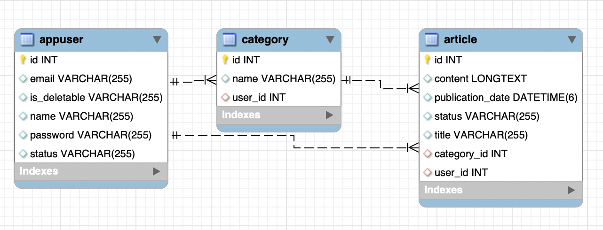
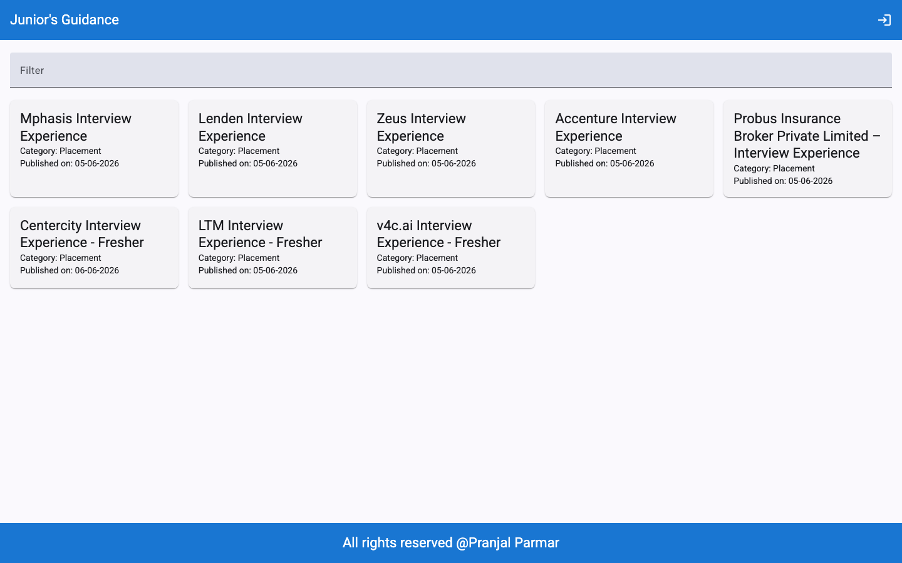
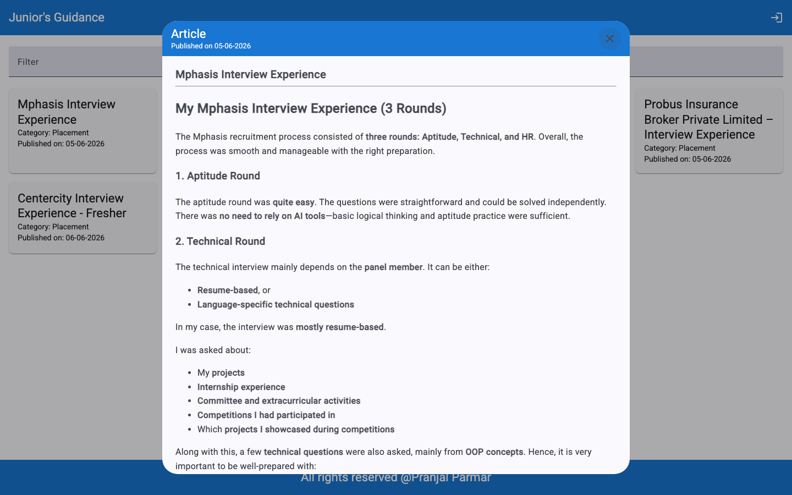
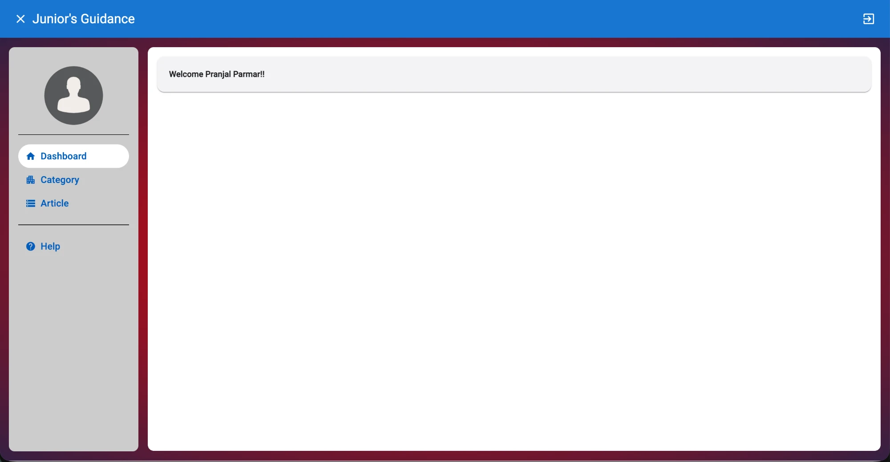
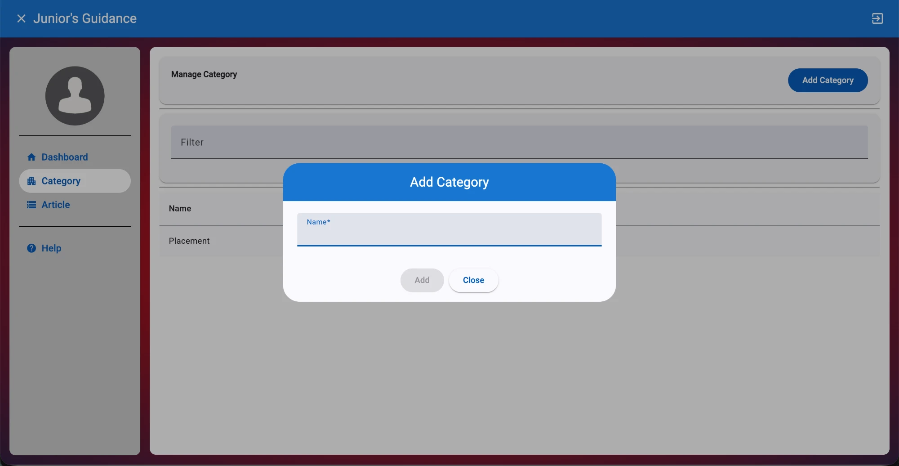
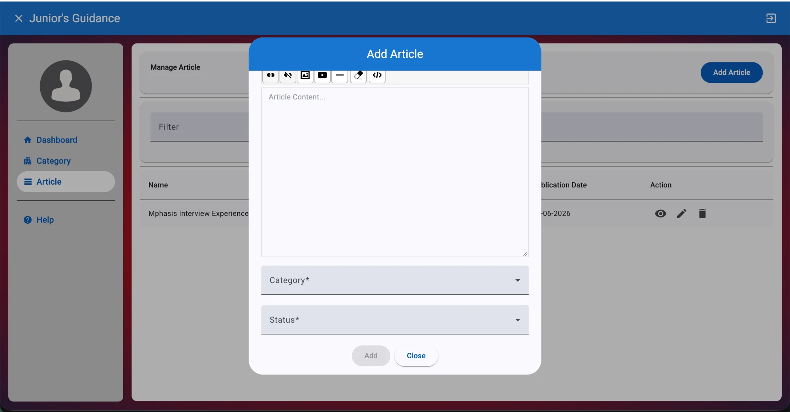

Junior Guidance
A full-stack article hub, built with Java/Spring Boot on the backend and Angular on the frontend, that helps students and junior developers understand real industry requirements through articles published by seniors on a role-based social platform.
Overview
Project Overview
Junior Guidance is a full-stack web application that lets people read, publish and manage articles through a clean, role-based interface. It is built so that students and junior developers can learn what the industry really expects from seniors who share their experience as published articles, organised by category.
It combines a Spring Boot REST API with a responsive Angular front end, secured with JWT authentication and backed by MySQL for persistent storage. The aim was a scalable, secure and maintainable article system with a clean separation between the front end, the back end and the database.
Capabilities
Key Features
Everything a reader, an author and an admin need, with the right access for each.
Secure Authentication
Stateless JWT login. The token carries the user id, role and name, expires after 2 hours, and passwords are hashed with BCrypt through Spring Security.
Role-Based Access Control
Permissions are enforced twice, in the Spring Security filter and again in the service layer, so a request cannot skip the check.
Article Management
Create articles with a title, content, category and a Draft or Published status. Authors update and delete their own work, and admins can manage any article.
Public Reading Feed
Published articles are open to everyone without logging in, so visitors can browse content first and sign up later.
Category System
Admins create and manage categories. Names are unique regardless of upper or lower case, and a selection list feeds the category dropdown when writing an article.
User Management
Anyone can register. Admins see all regular users and can enable or disable an account, so new accounts can wait for approval. Users edit their own name and email.
Session Check on Load
The front end verifies the saved token when the app opens and either keeps the user signed in or sends them to the login page.
Responsive UI
Built with Angular Material for a clean, consistent layout that works on phones and desktops.
Under the hood
Tech Stack
Angular
TypeScript
HTML5
CSS3
Java 21
Spring Boot
Spring Security
JWT
MySQL 8
JPA / Hibernate
Docker
Nginx
Also used: Angular Material, Spring Data JPA, Maven and Docker Compose.
System design
Architecture
Requests flow from the browser to the Spring Boot API with a JWT, and from the API to MySQL through Spring Data JPA and Hibernate.
Frontend
An Angular single-page app served by Nginx. It talks to the back end over HTTP and sends the JWT as a bearer token on every protected request.
Backend
A Spring Boot REST API. Spring Data JPA and Hibernate handle persistence, and Spring Security with a custom JWT filter handles authentication and authorization.
Database
MySQL 8 stores users, categories and articles. Hibernate manages the schema, and an admin account is seeded on first start-up if none exists.
Deployment
Containerized with Docker Compose: the Angular app behind Nginx, the Spring Boot API and the MySQL database each run in their own container.
Backend structure
Layered Backend Design
The back end is split into clear packages, so each concern has one home.
Config
Security configuration: JWT, CORS and role rules.
Filter
A request filter checks the token on every protected request before it reaches a controller.
JWT Service
Creates and validates tokens and loads the signed-in user for Spring Security.
Rest and Service layers
Controllers declare the endpoints, service interfaces define the rules, and implementations hold the business logic.
DAO and Entities
JPA repositories and entities map the three tables, including the named queries that scope results by role.
Data Loader
Seeds the first admin account so the platform is usable right after set-up.
Data model
Database Schema
Hibernate creates and updates the schema automatically. Three tables hold everything: users, categories and articles. Each category and each article records who created it.

appuser
Name, email, hashed password and an account status that controls whether the user may sign in. A flag marks admin accounts so they cannot be disabled or deleted by mistake.
category
A unique name and the user who created it.
article
Title, long-form content, Draft or Published status, publication date, its category and its author.
Security
How Authentication Works
Security is built in layers, from password hashing to role checks.
1. Sign in
The user logs in with email and password. If the account is disabled, the login is refused until an admin approves it.
2. Token issued
The server signs a JWT with HMAC-SHA256. It carries the user id, role and name and expires after 2 hours.
3. Every request is checked
A filter reads the bearer token, validates it against the stored user, and sets the signed-in identity. Reading published articles, registering and logging in are the only public actions.
4. Permissions applied
Admins can manage anything. Authors can change only their own articles and categories, and anyone else gets an access-denied response.
Production readiness
Security Checklist
What to change before taking the platform live.
Secrets out of the code
Move the JWT secret and database credentials into environment variables or a secrets manager.
HTTPS everywhere
Redirect HTTP to HTTPS in Nginx and serve a valid TLS certificate.
Refresh tokens
Rotate the signing secret and add refresh-token logic for a smoother session.
Locked-down schema and CORS
Switch Hibernate from auto-update to validate in production and restrict CORS to the real front-end domain.
Product
Screenshots
The deployed app, running on Docker. Anyone can read articles without an account, and signed-in users get a dashboard to manage categories and articles.


Signed-in experience


